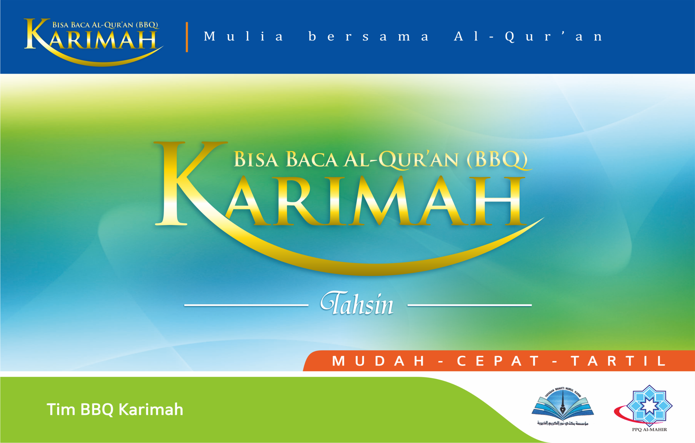

Keunggulan
Tujuan BBQ Karimah, Deskripsi Product, Keunggulan Product, Value, program Referral, Penawaran Khusus dan Paket edukasi
Tujuan
1. Memperluas Akses Pembelajaran Al-Qur’an
● Membuka lebih banyak pusat pembelajaran Metode Karimah di berbagai daerah di Indonesia.
● Mengembangkan platform pembelajaran online untuk menjangkau siswa yang tidak dapat menghadiri kelas secara fisik.
2. Meningkatkan Kualitas Pengajaran
● Melakukan pelatihan rutin bagi guru-guru Al-Qur'an untuk memastikan mereka memiliki kemampuan mengajar yang sesuai dengan standar Metode Karimah.
● Mengadakan workshop dan seminar untuk guru Al-Qur'an guna memperbarui pengetahuan mereka tentang metode pembelajaran yang efektif.
3. Mengembangkan Materi Pembelajaran yang Inovatif
● Menyusun dan memperbarui bahan ajar yang mudah dipahami oleh berbagai kalangan usia dan tingkat kemampuan.
● Mengintegrasikan teknologi dalam proses pembelajaran, seperti aplikasi mobile dan e-book, untuk memudahkan siswa belajar di mana saja dan kapan saja.
4. Meningkatkan Kecepatan dan Efektivitas Pembelajaran
● Merancang kurikulum yang memungkinkan siswa untuk mencapai kemajuan signifikan dalam waktu singkat.
● Menggunakan pendekatan pembelajaran yang interaktif dan menyenangkan untuk meningkatkan motivasi dan keterlibatan siswa.
5. Memastikan Keselarasan dengan Kaidah Tajwid
● Mengadakan sesi evaluasi rutin untuk memastikan bahwa pembelajaran selalu sesuai dengan kaidah tajwid.
● Mengundang pakar tajwid untuk memberikan masukan dan saran dalam penyusunan materi ajar.
6. Membangun Generasi Qur'ani yang Berkualitas
● Menyediakan program pembelajaran yang tidak hanya fokus pada kemampuan membaca, tetapi juga pemahaman dan pengamalan nilai-nilai Al-Qur'an.
● Melibatkan siswa dalam kegiatan keagamaan dan sosial yang mendukung pembentukan karakter Qur'ani.
Deskripsi product
Metode Karimah:
Mudah, Cepat, dan Efektif dalam Membaca Al-Qur’an Ingin bisa membaca Al-Qur’an dengan cepat dan benar? Metode Karimah hadir untuk membantu Anda! Metode Karimah adalah panduan belajar membaca Al-Qur’an yang disusun oleh tim asatidzah dari Pusat Pendidikan Al-Qur’an (PPQ) Al-Mahir. Metode ini telah diterima dengan baik oleh masyarakat di berbagai daerah di Indonesia dan telah membantu ribuan orang untuk bisa membaca Al-Qur’an dengan mudah dan cepat.
Apa yang Membuat Metode Karimah Unggul?
Karimah Dasar:
Memperkenalkan dasar-dasar membaca Al-Qur’an dengan cara yang mudah dipahami.
Karimah Tahsin:
Tingkat lanjutan untuk memperbaiki dan memperindah bacaan Al-Qur’an Anda.
Standar Internasional:
Disusun berdasarkan sistem penulisan Al-Qur’an standar Rasm Utsmani dan Dhabth dari Mushaf Al-Madinah An-Nabawiyah.
Metode Inovatif:
Pendekatan TABASSAM dan analogi yang memudahkan pembelajaran huruf hijaiyah.
Tajwid yang Mudah:
Menguasai ilmu tajwid dasar hanya dengan sistem tanda baca (dhabth).
Tajwid yang Mudah:
Hanya dua langkah untuk bisa membaca Al-Qur’an sesuai kaidah tajwid.
Dapat Digunakan oleh Semua Kalangan:
Mulai dari anak-anak hingga orang dewasa.
Value
QUANTUM
Q - Quality (Kualitas)
Berkomitmen untuk menyediakan pembelajaran Al-Qur’an yang bermutu tinggi dan sesuai standar internasional.
U - Universal Access (Aksesibilitas Universal)
Menyediakan pembelajaran Al-Qur’an yang mudah diakses oleh semua kalangan, tanpa memandang usia, latar belakang, atau lokasi.
A - Agility (Kelincahan)
Mengembangkan dan mengadopsi teknik dan alat pembelajaran baru yang memudahkan dan mempercepat proses belajar.
N - Nurture (Pembinaan)
Membangun komunitas belajar yang inklusif dan mendukung, serta peduli terhadap perkembangan spiritual dan moral setiap siswa.
T - Trust (Kepercayaan)
Menjaga integritas, profesionalisme, dan tanggung jawab dalam setiap aspek pengajaran dan pembelajaran.
U - Understanding (Pemahaman)
Memastikan setiap aspek pengajaran dan pembelajaran sesuai dengan kaidah-kaidah tajwid, dan mendorong pemahaman serta pengamalan nilai-nilai Al-Qur'an.
M - Mission-driven (Berorientasi Misi)
Berkomitmen untuk mencapai visi dan misi Metode Karimah dengan hasil yang berkelanjutan dan berdampak jangka panjang dalam pendidikan Al-Qur'an di Indonesia.
Program Referral
Ajak Teman
Bagikan kode referral Anda kepada teman-teman Anda dan dapatkan diskon.
Dapatkan Diskon
Teman Anda akan mendapatkan diskon 20% pada pembelian pertama mereka.
* Syarat dan ketentuan berlaku.
Penawaran Khusus
Promo dan Discount
Paket Karimah Dasar

Paket Karimah Dasar Discount up to 30 percent
Paket Karimah Tahsin
Paket Karimah Tahsin Discount up to 30 percent
Paket Kitabah

Paket Kitabah Discount up to 30 percent
Paket Bundling
Hanya: Rp.30.000
Hanya: Rp.30.000

Hanya: Rp.25.000
Paket Edukasi
Perpustakaan BBQ Karimah
Flashcard Karimah
Mushaf Karimah Juz 1-3